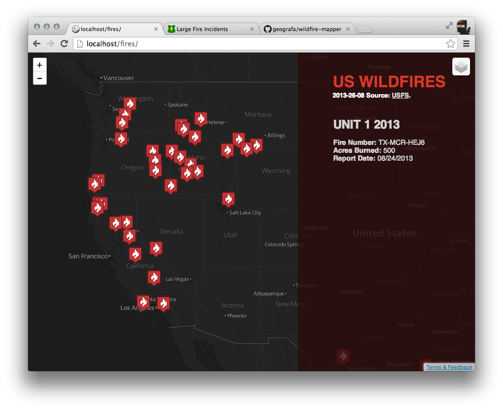
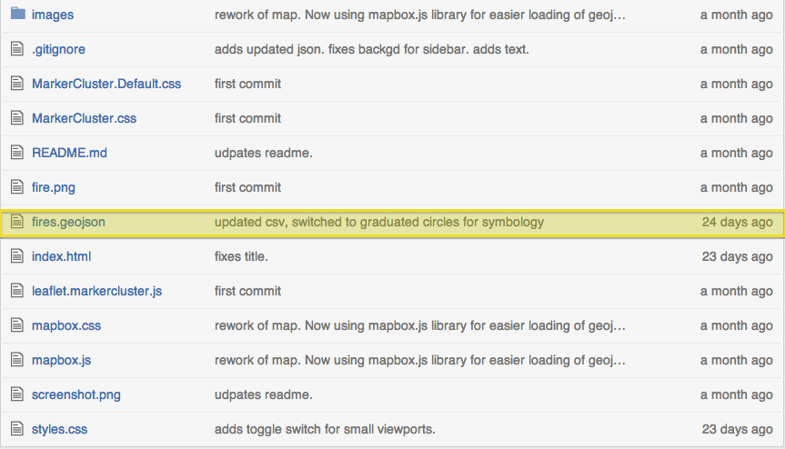
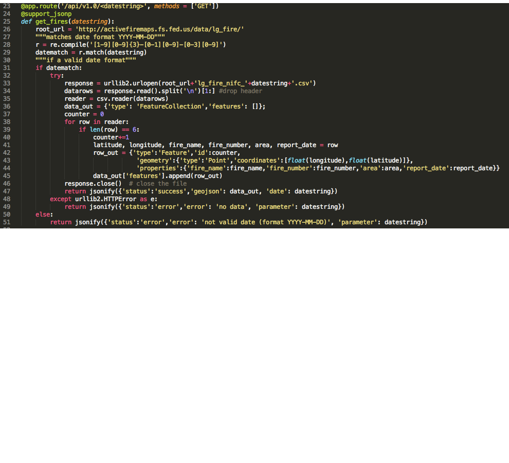
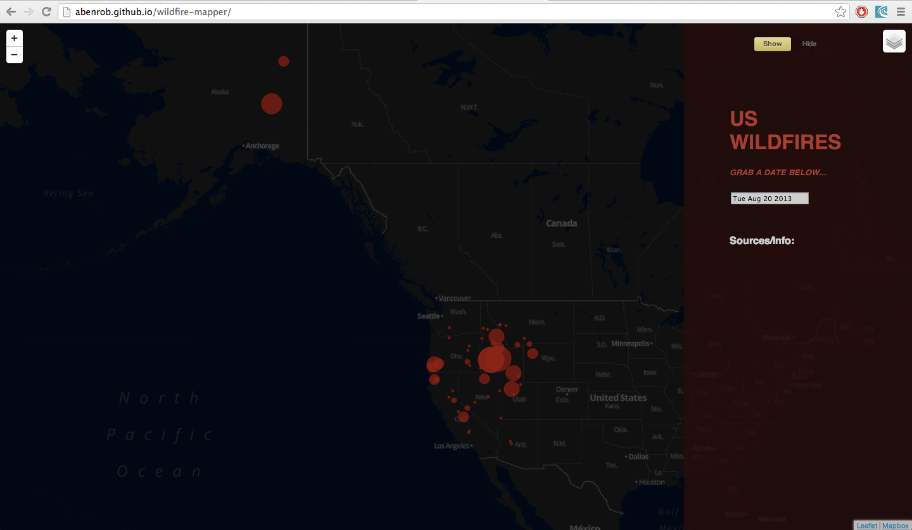
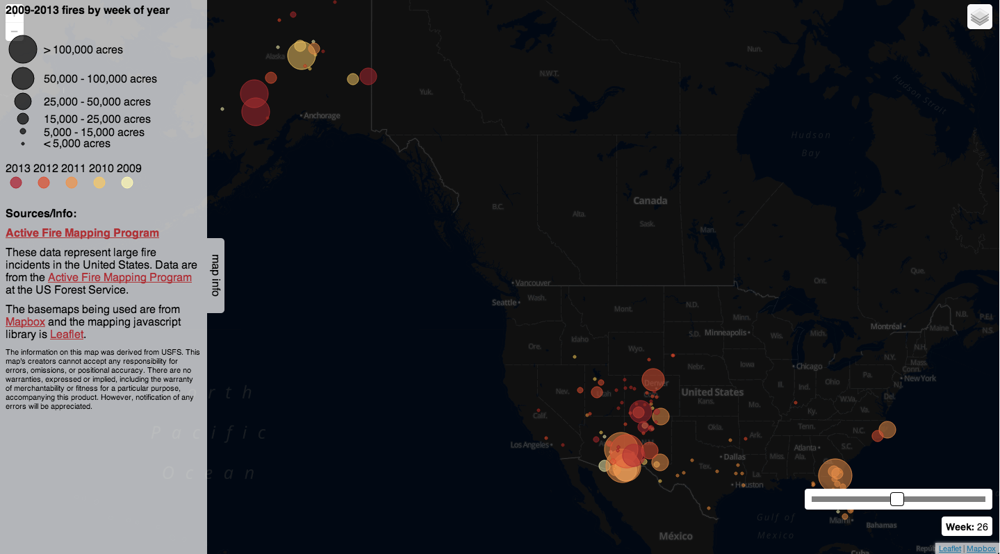

Playing with fire
Normalizing USFS fire data for use in modern maps
Adam Roberts @abenroberts abenrob on github
so there I was one day...
...playing with maps
@geografa had a neat idea

but

csv fine for one pull
but tomorrow I need to pull new data
maybe I can load the csv from the remote USFS source...
NO
CORS = ☹
maybe I can write a proxy server and stand it up on my server and
NO
that would be cray-cray
maybe I could
NO
what I needed was data that I could just USE
I just want the data
and any excuse to play around with something cool
geoJSON is what I want
how can I create a tool that will fetch geoJSON for any day I want (live from USFS - no daily pulls!)
enter Flask
Flask is micro
Flask is python
with Flask I can create a single resource API that translates USFS csv to geoJSON
in 57 lines of code
this is boring, show us some code

umm...ok, that is boring too...show us some maps!


Adam Roberts @abenroberts abenrob on github